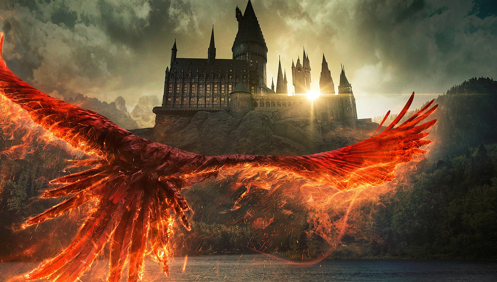

Datos sorprendentes del universo de Harry Potter
El universo de Harry Potter está lleno de secretos y detalles fascinantes que muchos fans desconocen.
1. El hechizo Patronus más raro
El Patronus más raro jamás registrado es el de un dragón. En el mundo de Harry Potter, muy pocos magos han logrado convocarlo debido a su complejidad.
2. El sombrero seleccionador dudó con Hermione
Aunque Hermione terminó en Gryffindor, el Sombrero Seleccionador consideró seriamente colocarla en Ravenclaw debido a su inteligencia excepcional.
3. Hogwarts tenía más de 100 escaleras cambiantes
El castillo de Hogwarts tiene exactamente 142 escaleras que cambian de dirección y tamaño según su propio capricho.
4. Dumbledore sabía hablar Mermish
El director de Hogwarts tenía un talento especial para los idiomas y podía comunicarse con las sirenas en su propio idioma.
5. J.K. Rowling casi mató a Ron Weasley
La autora admitió que en un momento consideró matar a Ron en los libros, pero al final decidió mantenerlo en la historia.